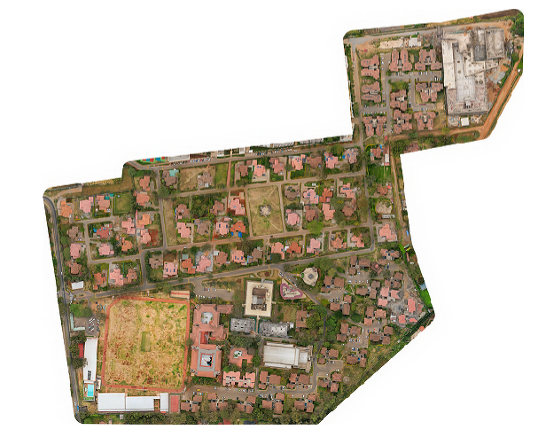
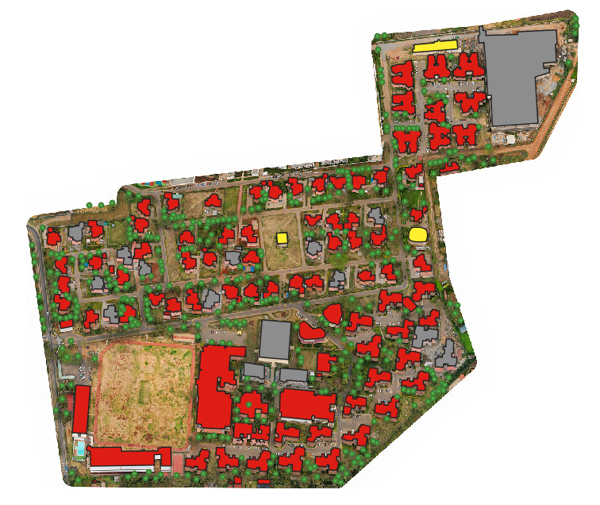

The project invloved conducting detailed topographic survey at Saifee Park, Nairobi, to support the upgrading and expansion of the stormwater and sewer infrastructure. The survey combined UAV-based photogrammetry, ground-based
surveys and precise leveling of sewer and stormwater lines to capture invert levels and flow gradients critical for planning.
Workflow
- Established ground control points(GCPs) across the project area using GNSS-RTK to ensure accurate georeferencing of aerial imagery.
- Performed a detailed topographic survey using total station to collect ground points, breaklines and key infrastructure features.
- Conducted precise leveling of sewer and stormwater lines to determine invert levels and flow directions.
- Processed UAV imagery in Agisft Metashape to generate a dense point cloud and orthomosaic.
- Generated a Digital Elevation Model (DEM) and digitized additional site features from the orthomosaic to capture elements not observed during the ground survey.
- Compiled total station data, digitized features, elevation contours in AutoCAD to produce the final topographic drawings.
Tools & Technologies
Output

